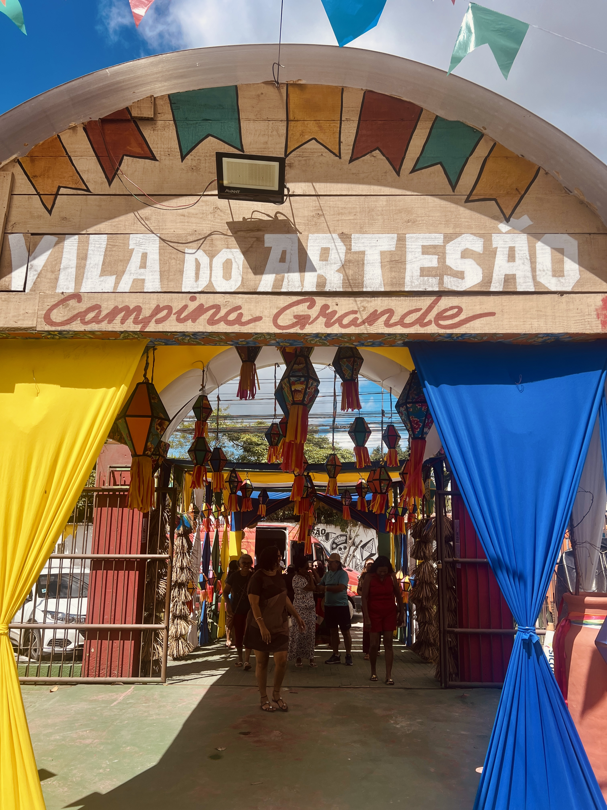
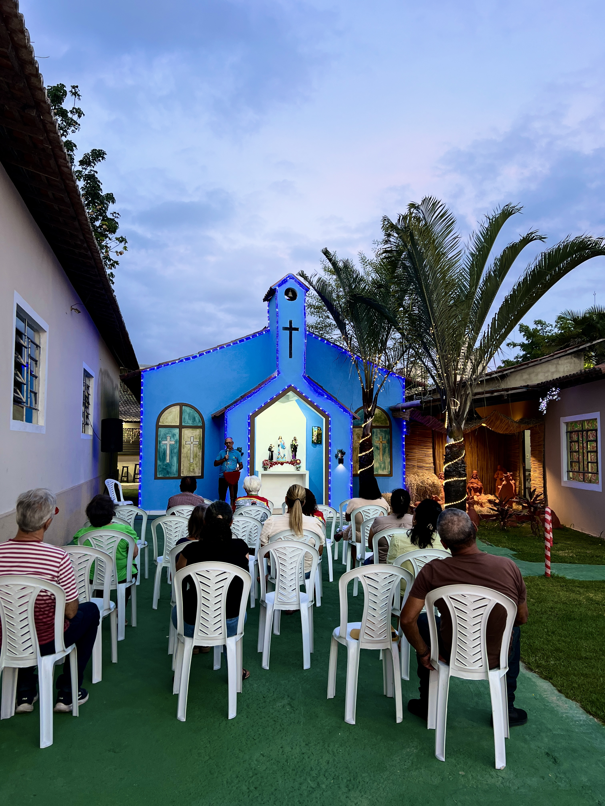
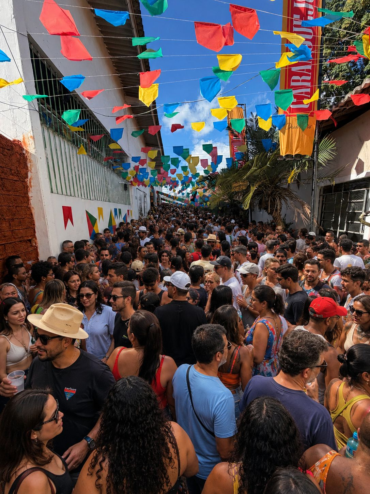
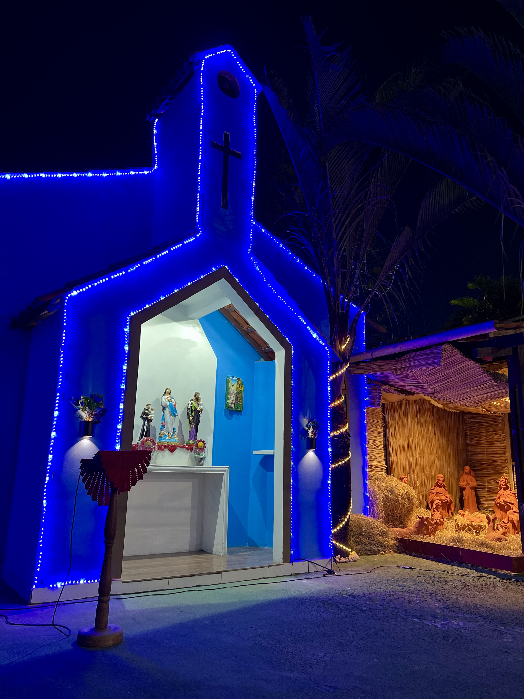

Couro
Peças e trabalhos em couro.
Campina Grande · Paraíba
Um convite para descobrir o artesanato, a cultura e as histórias que dão forma à identidade local.
 Artesanato e cultura em Campina Grande
Artesanato e cultura em Campina Grande

Feito com identidade
A Vila do Artesão é um espaço de Campina Grande dedicado à produção artesanal e às expressões culturais da região. O trabalho manual reúne conhecimentos, técnicas e criações que ajudam a contar diferentes histórias.
Este projeto busca aproximar visitantes dos segmentos cadastrados e valorizar as pessoas que fazem parte da Vila.
Saiba mais sobre a VilaUm universo de técnicas
Categorias registradas no recadastramento disponibilizado ao projeto. A oferta pode variar; consulte o catálogo antes da visita.
Peças e trabalhos em couro.
Criações com formas e veios naturais.
Tramas, pontos e detalhes feitos à mão.
Fios, formas e criação artesanal.
Sabores e preparos da região.
Objetos para apreciar e compor espaços.
Sabores para conhecer com responsabilidade.
Criações cadastradas sem uma categoria específica.
História, saberes e criação
Fundada em dezembro de 2010 como iniciativa pública, a Vila reúne artesãos e valoriza a cultura nordestina por meio do trabalho manual. Peças em barro, couro, madeira, fios, tecidos, rendas e bordados mostram a diversidade de técnicas e saberes locais.
Conheça a história da VilaFotografias do espaço, do artesanato e de atividades culturais na Vila do Artesão.







Fotografias: Caroline Mota
Informações para sua visita
Consulte o horário informado pela equipe, o endereço e a localização oficial para planejar sua visita.

A Vila em vídeo
Assista aos vídeos disponíveis sobre a Vila do Artesão.
Localização e contato
Consulte as informações práticas e os canais oficiais para planejar sua visita.
Horário de funcionamento: